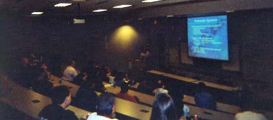
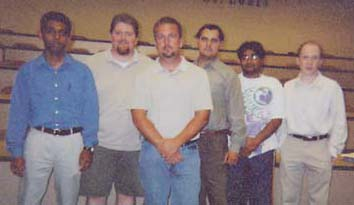

|
 |
 |
|
 |
 |
09/13/2002
The first meeting held this semester was a joint meeting with the MIS
Mentoring Club. The speaker was Rick Fink, the project leader for a Supply Chain
Management application for Anheuser-Busch. He gave us an insightful speech about
his project and his company's use of Java Enterprise Edition (J2EE) and
Enterprise Resource Planning (ERP).

He explained that Supply Chain Management involves supply chain planning and
execution that encompasses order management, warehouse management,
transportation management, and production execution. The technologies that are
incorporated into the project are Oracle, J2EE and HTML. Websphere AD 4.0 is
used to write the programs. He also spoke about how to use an
evolutionary/waterfall development methodology for the design of the system.

Rick and the officers of ISPC and MIS Mentoring Club.
|
 |
 |